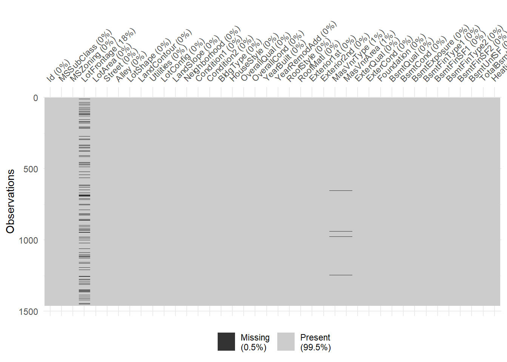
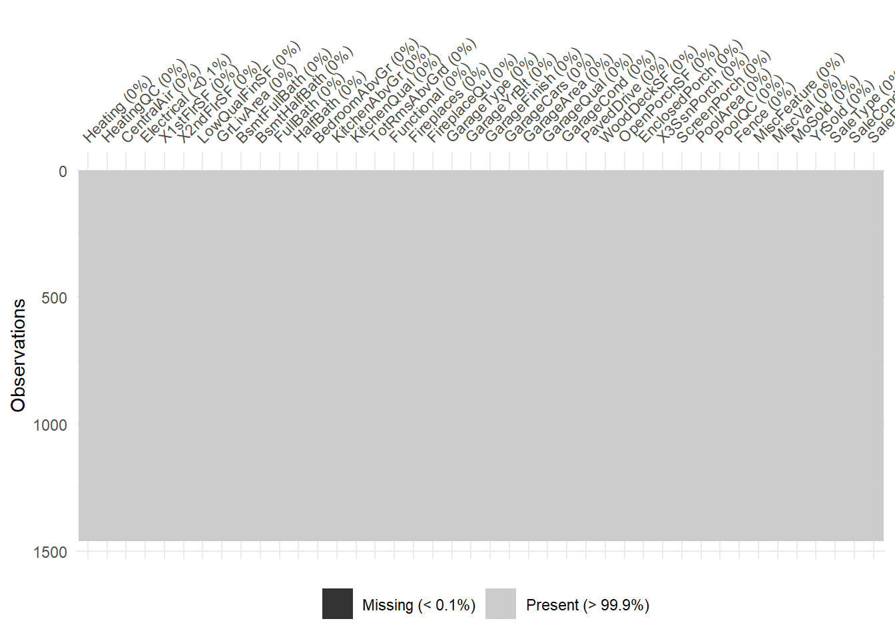
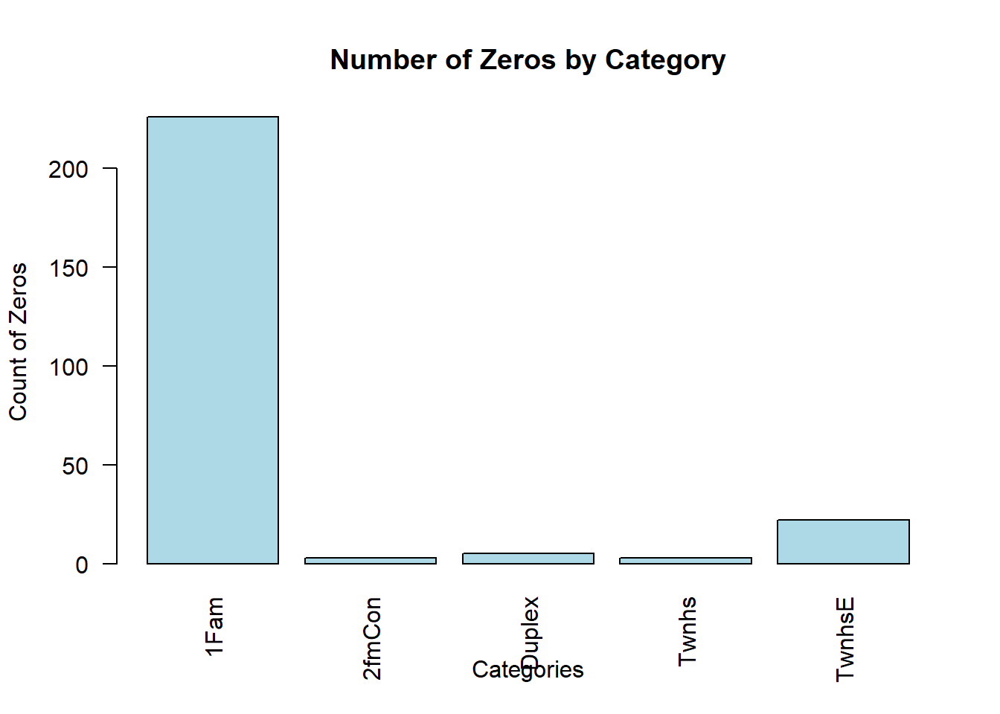
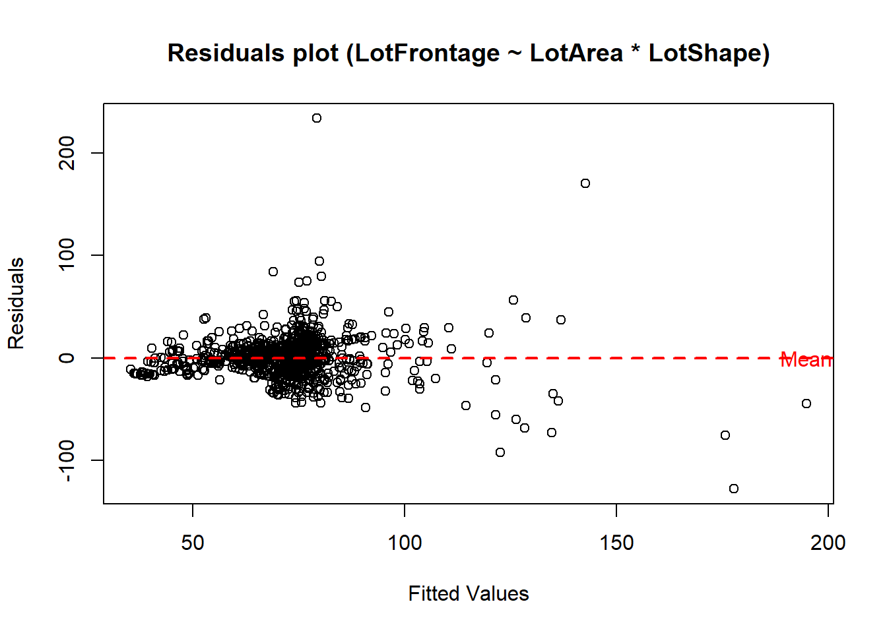
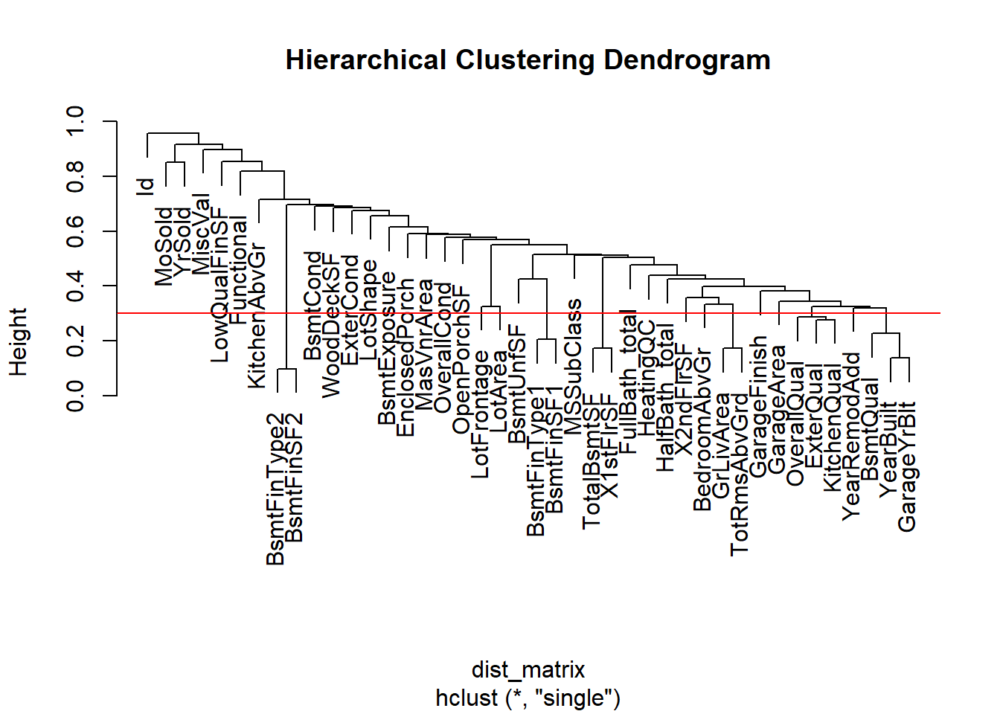
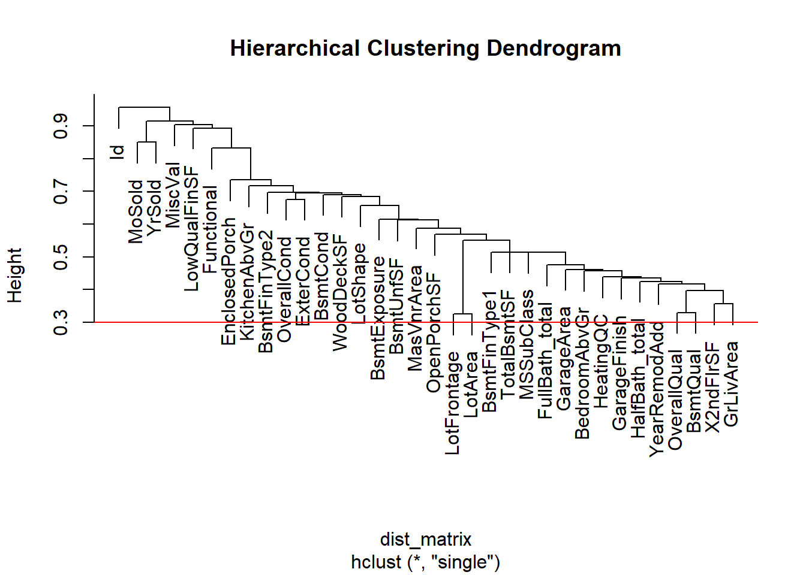
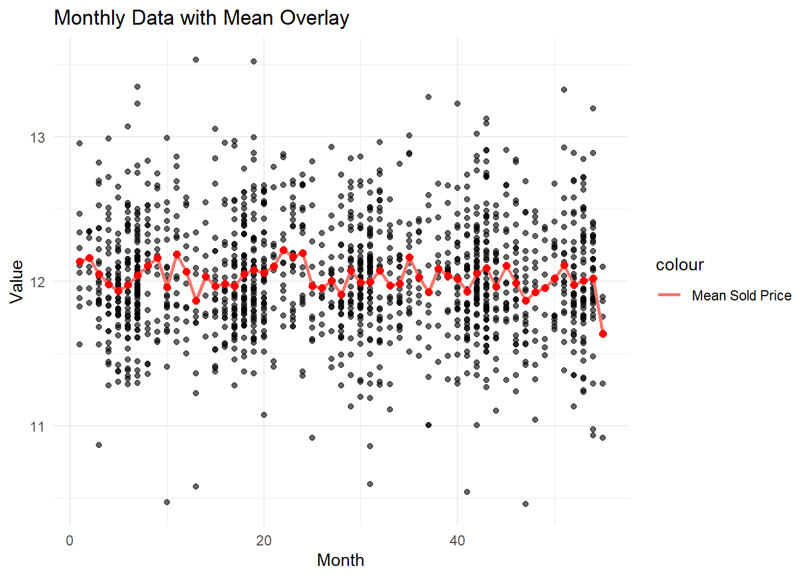
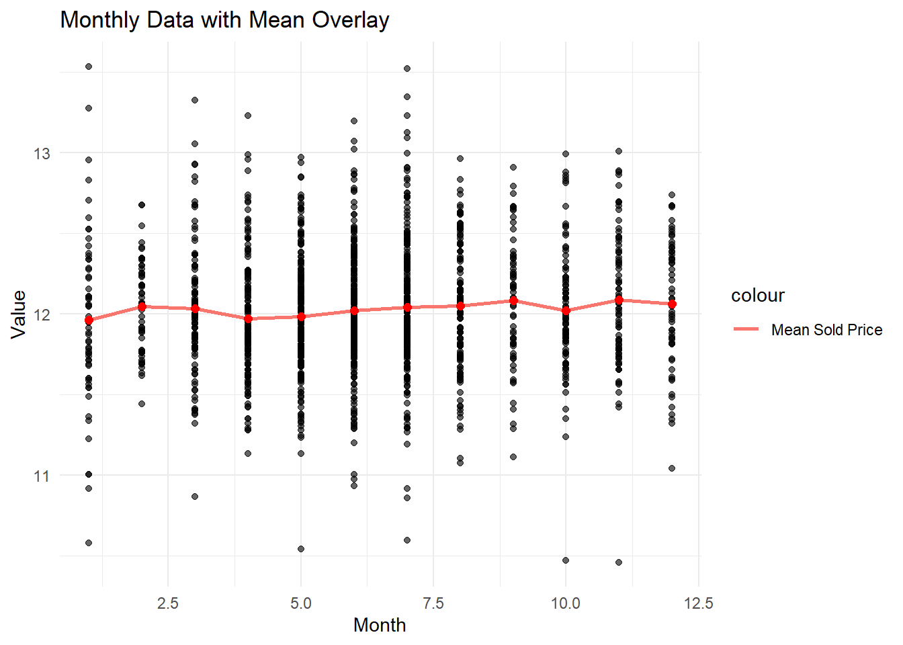

This is practics case based on some data from kaggle
I mostly made this to play around with some data and learn new methods. When working with data, like many others, I like to use either R Markdown or Jupyter Notebook. I also enjoy writing small notes and comments so that if I need to revisit the project later, I can easily see what I did. This approach is really helpful in terms of reproducibility. Unfortunately, people often share notebooks without adding any text or comments.
While I’ve written out some comments here, I don’t go too deep. However, I do show parts of my workflow. The code is written in R, and I consider it what I call “one-time code.” It’s not meant to be read by others, so there aren’t a lot of comments. It’s not optimized either—I’ve simply chosen the fastest code I could think of or find to solve a problem. I ende op using Chat-gbt for some code aswell then correcting the mistakes. The methology and the models chosen is all me.
Metric
The goal is to achieve the lowest score on the out-of-sample prediction set based on a specific metric.
Let \(P_{id}\) represent the price of a given house identified by \(id\).
The metric used for scoring is the Root Mean Squared Deviation (RMSD) of logarithmic prices:
The logarithm is applied to ensure that expensive houses are not prioritized disproportionately. Without this adjustment, the model might prioritize expensive houses because the same proportional change in price would result in a larger numerical difference for higher-priced properties.
(While this argument makes sense, it seems like the ratio of expensive to “cheap” houses in the dataset might also affect this outcome.)
(Nevertheless, this is the metric used by all other candidates, so if I want to compare my score with theirs, I must use it.)
When conducting the analysis, the square root is typically omitted. This simplification does not affect the results, as the square root is a monotonically increasing function. Therefore, for model selection, the choice remains unaffected.
Data explorations data/cleaning.
Their is detail data description here, on krangler af in textfile with the data.
I have copied the description of the covariates.
Click to expand/collapse varibel descriptions
SalePrice - the property’s sale price in dollars. This is the target variable that you’re trying to
Predictor varibels
MSSubClass: The building class
MSZoning: The general zoning classification
LotFrontage: Linear feet of street connected to property
LotArea: Lot size in square feet
Street: Type of road access
Alley: Type of alley access
LotShape: General shape of property
LandContour: Flatness of the property
Utilities: Type of utilities available
LotConfig: Lot configuration
LandSlope: Slope of property
Neighborhood: Physical locations within Ames city limits
Condition1: Proximity to main road or railroad
Condition2: Proximity to main road or railroad (if a second is present)
BldgType: Type of dwelling
HouseStyle: Style of dwelling
OverallQual: Overall material and finish quality
OverallCond: Overall condition rating
YearBuilt: Original construction date
YearRemodAdd: Remodel date
RoofStyle: Type of roof
RoofMatl: Roof material
Exterior1st: Exterior covering on house
Exterior2nd: Exterior covering on house (if more than one material)
MasVnrType: Masonry veneer type
MasVnrArea: Masonry veneer area in square feet
ExterQual: Exterior material quality
ExterCond: Present condition of the material on the exterior
Foundation: Type of foundation
BsmtQual: Height of the basement
BsmtCond: General condition of the basement
BsmtExposure: Walkout or garden level basement walls
BsmtFinType1: Quality of basement finished area
BsmtFinSF1: Type 1 finished square feet
BsmtFinType2: Quality of second finished area (if present)
BsmtFinSF2: Type 2 finished square feet
BsmtUnfSF: Unfinished square feet of basement area
GrLivArea: Above grade (ground) living area square feet
BsmtFullBath: Basement full bathrooms
BsmtHalfBath: Basement half bathrooms
FullBath: Full bathrooms above grade
HalfBath: Half baths above grade
Bedroom: Number of bedrooms above basement level
Kitchen: Number of kitchens
KitchenQual: Kitchen quality
TotRmsAbvGrd: Total rooms above grade (does not include bathrooms)
Functional: Home functionality rating
Fireplaces: Number of fireplaces
FireplaceQu: Fireplace quality
GarageType: Garage location
GarageYrBlt: Year garage was built
GarageFinish: Interior finish of the garage
GarageCars: Size of garage in car capacity
GarageArea: Size of garage in square feet
GarageQual: Garage quality
GarageCond: Garage condition
PavedDrive: Paved driveway
WoodDeckSF: Wood deck area in square feet
OpenPorchSF: Open porch area in square feet
EnclosedPorch: Enclosed porch area in square feet
3SsnPorch: Three season porch area in square feet
ScreenPorch: Screen porch area in square feet
PoolArea: Pool area in square feet
PoolQC: Pool quality
Fence: Fence quality
MiscFeature: Miscellaneous feature not covered in other categories
MiscVal: $Value of miscellaneous feature
MoSold: Month Sold
YrSold: Year Sold
SaleType: Type of sale
SaleCondition: Condition of sale
Comments on Available Data
All the houses are located in the Ames city area. There is information on the month and year sold. (In both the training and test sets, the years have the same values, meaning there’s no need to estimate values forward in time. This is a bit unusual—what is the purpose of the model in such a case?) Most of the data is categorical or discrete in nature. Some of the data has a natural order or rank. When examining the available data, it’s worth noting that there is no information on earlier sale prices—why is this missing? Information on “time on market” is also missing.
Data cleaning and exploration
Code
library(readr)df=as.data.frame(read.csv("train.csv"))#split <- sample(1:nrow(df), size = 0.8 * nrow(df))# Create training and testing sets#df <- df[split, ] # 80% of the data#df_test_for_choice <- df[-split, ] # other 20%#df_test_preformence=as.data.frame(read.csv("test.csv"))
Recoding NA
In the description, I noticed that some of the variables use NA as a category.
Varibels where NA is a catgori is listed below.
Alley
BsmtQual
BsmtCond
BsmtExposure
BsmtFinType1
BsmtFinType2
FireplaceQu
GarageType
GarageFinish
GarageQual
GarageCond
PoolQC
Fence
MiscFeature
These variables need to be recoded, as the values are not missing—they are simply in the wrong format.
Code
#change chang_to_df<-function(DF){ DF$Alley<-DF$Alley[is.na(DF$Alley)] <-"No alley" DF$BsmtQual[is.na(DF$BsmtQual)]<-"No Basement" DF$BsmtCond[is.na(DF$BsmtCond)]<-"No Basement" DF$BsmtExposure[is.na(DF$BsmtExposure)]<-"No Basement" DF$BsmtFinType1[is.na(DF$BsmtFinType1)]<-"No Basement" DF$BsmtFinType2[is.na(DF$BsmtFinType2)]<-"No Basement" DF$FireplaceQu[is.na(DF$FireplaceQu)]<-"No Fireplace" DF$GarageType[is.na(DF$GarageType)]<-"No Garage" DF$GarageFinish[is.na(DF$GarageFinish)]<-"No Garage" DF$GarageQual[is.na(DF$GarageQual)]<-"No Garage" DF$GarageCond[is.na(DF$GarageCond)]<-"No Garage" DF$GarageYrBlt[is.na(DF$GarageYrBlt)]<-0# all values that is NA corespond wither other showing that their is no garage. DF$PoolQC[is.na(DF$PoolQC)]<-"No Pool" DF$Fence[is.na(DF$Fence)]<-"No Fence" DF$MiscFeature[is.na(DF$MiscFeature)]<-"None"return(DF)}df<-chang_to_df(df)#df_test_for_choice<-chang_to_df(df_test_for_choice)df_test_preformence<-chang_to_df(df_test_preformence)
Examining Missing Values
After recoding cases where NA does not represent missing values, we will now analyze the actual missing values.
Below is a plot showing the missing values. I had to split the plot into two parts; otherwise, the variable names would not be readable.
Code
library(naniar)vis_miss(df[,1:40])

Code
vis_miss(df[,40:81])

LotFrontage missing values look weird.
The definition is Linear feet of street connected to property. Below i have printed uniqe entreances in LotFrontage.
From the definition, it could refer to farms, but there are no farms in the dataset.
If we plot the house types against the number of missing values, we see that most of them come from single-family detached houses.
Code
library(dplyr)# Test farm theorytest_LotFrontage <- df$LotFrontagetest_LotFrontage[is.na(test_LotFrontage)] <-0test_BldgType <-factor(df$BldgType)# Create a data framedata <-data.frame(test_BldgType, test_LotFrontage)zero_counts <- data %>%filter(test_LotFrontage ==0) %>%count(test_BldgType)# Create the bar plot with category labels at the bottombarplot(zero_counts$n, names.arg = zero_counts$test_BldgType, # Use the correct column for labelsmain ="Number of Zeros by Category",xlab ="Categories",ylab ="Count of Zeros",col ="lightblue",las =2) # Rotate labels to vertical

It seems like most of the missing values are from single-family detached houses, so it’s unrealistic to assume there is no street connected to the property. This means setting the values to zero is likely a bad option.
Options for imputation:
Linear regression based on other variables. k-nearest neighbors. I could also disregard this variable since I doubt it has high predictive power.
It seems like an interactive linear model, incorporating the interaction between LotArea and LotShape, would provide good imputation (this also makes sense conceptually).
Code
Imputasion_model <-lm(LotFrontage ~ LotArea * LotShape, df)# Plot fitted values vs. residualsplot(Imputasion_model$fitted.values, Imputasion_model$residuals,xlab ="Fitted Values",ylab ="Residuals",main ="Residuals plot (LotFrontage ~ LotArea * LotShape)")# Add a horizontal line at the mean of the residuals (which should be zero)abline(h =mean(Imputasion_model$residuals), col ="red", lwd =2, lty =2)mean_value <-mean(Imputasion_model$residuals)text(x =max(Imputasion_model$fitted.values), y = mean_value, labels ="Mean", col ="red")

Missing values for LotFrontage will be imputed using the linear model described above.
This also means that if LotFrontage is used in the model, the imputation will need to be performed on the test set as well. I have internally debated whether I should include the test set when building the imputation model—essentially, creating a model based on both the training and test sets for this purpose.
Since I’m a little new to Kaggle, if the test set contains covariates and I only need to upload the fitted values, I would proceed with this approach. Otherwise, I would not. For now, I will just use the model based only on the training set.
Code
# imputatsionImputasion_model <-lm(LotFrontage ~ LotArea * LotShape, df)Input_value<-function(DF){for (i in1:length(DF$LotFrontage)){if(is.na(DF$LotFrontage[i])){ DF$LotFrontage[i]<-predicted_value <-predict(Imputasion_model, newdata =list(LotArea = DF$LotArea[i],LotShape = DF$LotShape[i] )) } }return(DF) }#input df for all input valuesdf<-Input_value(df)#df_test_for_choice<-Input_value(df_test_for_choice)df_test_preformence<-Input_value(df_test_preformence)
There are still 1% of missing values in MasVnrArea and MasVnrType. I will discard the last row containing these missing values.
Looking at the Data
In this section, I will examine the variable distributions and determine if any transformations or categorizations are necessary. To explore the data, I have created a number of plots for the variables. To make this process more accessible to potential readers, I have developed a small Shiny live application. To run this application live, I need to read the data from an online source, which is hosted on my GitHub page.
I have included the code for the plots, and a potential reader can see in the code where the data is written to a text file.
Recoding of Variables
Some of these variables have a ranking, which makes them well-suited for recoding. By recoding them as numerical values, the ranking becomes more obvious.
Click to expand/collapse varibel recoeding
To give a exampel of the recoding. PoolQC: Pool quality
Ex Excellent (4)
Gd Good (3)
TA Average/Typical (2) (TA is never obsevered in pool varibel for traning set)
Fa Fair (1)
NA No Pool (0)
can be codes as 0-4
Belowe here i have made list of how the varibels is code. I have made is so no pressent cagories NA is code to 0. Meaning 0 is only a value if the item is not pressent. and otherwise it starts from 1.
LotShape: General shape of property Reg Regular (4) IR1 Slightly irregular (3) IR2 Moderately Irregular (2) IR3 Irregular (1)
LandContour: Flatness of the property
Lvl Near Flat/Level (4)
Bnk Banked - Quick and significant rise from street grade to building (3)
HLS Hillside - Significant slope from side to side (2)
Low Depression (1)
LandSlope: Slope of property
Gtl Gentle slope (3)
Mod Moderate Slope (2)
Sev Severe Slope (1)
ExterQual: Evaluates the quality of the material on the exterior
Ex Excellent (5)
Gd Good (4)
TA Average/Typical (3)
Fa Fair (2)
Po Poor (1)
ExterCond: Evaluates the present condition of the material on the exterior
Ex Excellent (5)
Gd Good (4)
TA Average/Typical (3)
Fa Fair (2)
Po Poor (1)
BsmtQual: Evaluates the height of the basement
Ex Excellent (100+ inches) (5)
Gd Good (90-99 inches) (4)
TA Typical (80-89 inches) (3)
Fa Fair (70-79 inches) (2)
Po Poor (<70 inches (1)
NA No Basement (0)
BsmtCond: Evaluates the general condition of the basement
Ex Excellent (5)
Gd Good (4)
TA Typical - slight dampness allowed (3)
Fa Fair - dampness or some cracking or settling (2)
Po Poor - Severe cracking, settling, or wetness (1)
NA No Basement (0)
BsmtExposure: Refers to walkout or garden level walls
Gd Good Exposure (4)
Av Average Exposure (split levels or foyers typically score average or above) (3)
Mn Mimimum Exposure (2)
No No Exposure (1)
NA No Basement (0)
BsmtFinType1: Rating of basement finished area
GLQ Good Living Quarters (6)
ALQ Average Living Quarters (5)
BLQ Below Average Living Quarters (4)
Rec Average Rec Room (3)
LwQ Low Quality (2)
Unf Unfinshed (1)
NA No Basement (0)
BsmtFinType2: Rating of basement finished area (if multiple types)
GLQ Good Living Quarters (6)
ALQ Average Living Quarters (5)
BLQ Below Average Living Quarters (4)
Rec Average Rec Room (3)
LwQ Low Quality (2)
Unf Unfinshed (1)
NA No Basement (0)
HeatingQC: Heating quality and condition
Ex Excellent (5)
Gd Good (4)
TA Average/Typical (3)
Fa Fair (2)
Po Poor (1)
KitchenQual: Kitchen quality
Ex Excellent (5)
Gd Good (4)
TA Average/Typical (3)
Fa Fair (2)
Po Poor (1)
Functional: Home functionality (Assume typical unless deductions are warranted)
Typ Typical Functionality (7)
Min1 Minor Deductions 1 (6)
Min2 Minor Deductions 2 (5)
Mod Moderate Deductions (4)
Maj1 Major Deductions 1 (3)
Maj2 Major Deductions 2 (2)
Sev Severely Damaged (1)
Sal Salvage only (0)
FireplaceQu: Fireplace quality
Ex Excellent - Exceptional Masonry Fireplace (5)
Gd Good - Masonry Fireplace in main level (4)
TA Average - Prefabricated Fireplace in main living area or Masonry Fireplace in basement (3)
Fa Fair - Prefabricated Fireplace in basement (2)
Po Poor - Ben Franklin Stove (1)
NA No Fireplace (0)
GarageFinish: Interior finish of the garage
Fin Finished (3)
RFn Rough Finished (2)
Unf Unfinished (1)
NA No Garage (0)
GarageQual: Garage quality
Ex Excellent (5)
Gd Good (4)
TA Typical/Average (3)
Fa Fair (2)
Po Poor (1)
NA No Garage (0)
GarageCond: Garage condition
Ex Excellent (5)
Gd Good (4)
TA Typical/Average (3)
Fa Fair (2)
Po Poor (1)
NA No Garage (0)
PoolQC: Pool quality
Ex Excellent (4)
Gd Good (3)
TA Average/Typical (2) (TA is never obsevered in pool varibel for traning set)
Fa Fair (1)
NA No Pool (0)
Fence: Fence quality
GdPrv Good Privacy (4)
MnPrv Minimum Privacy (3)
GdWo Good Wood (2)
MnWw Minimum Wood/Wire (1)
NA No Fence (0)
Their properly also some rank to other varibels, varibels like building matrials must have a ranking in terms of price. But i dont have any idear about whese.
Code
# Reencoding can be don via match.# recodingrecoding<-function(DF){ DF$LotShape<-match(DF$LotShape,c("IR3","IR2","IR1","Reg"))#DF$LandContour<-match(DF$LandContour,c("Low","HLS","Bnk","Lvl"))#DF$LandSlope<-match(DF$LandSlope,c("Sev","Mod","Gtl")) DF$ExterQual<-match(DF$ExterQual,c("Po","Fa","TA","Gd","Ex")) DF$ExterCond<-match(DF$ExterCond,c("Po","Fa","TA","Gd","Ex")) DF$BsmtQual<-match(DF$BsmtQual,c("No Basement","Fa","TA","Gd","Ex"))-1 DF$BsmtCond<-match(DF$BsmtCond,c("No Basement","Fa","TA","Gd","Ex"))-1 DF$BsmtExposure<-match(DF$BsmtExposure,c("No Basement","No","Mn","Av","Gd"))-1 DF$BsmtFinType1<-match(DF$BsmtFinType1,c("No Basement","Unf","LwQ","Rec","BLQ","ALQ","GLQ"))-1 DF$BsmtFinType2<-match(DF$BsmtFinType2,c("No Basement","Unf","LwQ","Rec","BLQ","ALQ","GLQ"))-1 DF$HeatingQC<-match(DF$HeatingQ,c("Po","Fa","TA","Gd","Ex")) DF$KitchenQual<-match(DF$KitchenQual,c("Po","Fa","TA","Gd","Ex")) DF$Functional<-match(DF$Functional,c("Sal","Sev","Maj2","Maj1","Mod","Min2","Min1","Typ"))-1 DF$FireplaceQu<-match(DF$FireplaceQu,c("No Fireplace","Po","Fa","TA","Gd","Ex"))-1 DF$GarageFinish<-match(DF$GarageFinish,c("No Garage","Unf","RFn","Fin"))-1 DF$GarageQual<-match(DF$GarageQual,c("No Garage","Po","Fa","TA","Gd","Ex"))-1 DF$GarageCond<-match(DF$GarageCond,c("No Garage","Po","Fa","TA","Gd","Ex"))-1 DF$PoolQC<-match(DF$PoolQC, c("No Pool","Fa","TA","Gd","Ex"))-1#DF$Fence<-match(DF$Fence,c("No Fence","MnWw","GdWo","MnPrv","GdPrv"))-1return(DF)}df<-recoding(df)#df_test_for_choice<-recoding(df_test_for_choice)df_test_preformence<-recoding(df_test_preformence)
View varibels
Below is a plot of all the variables. I prefer histograms over boxplots as they provide a better overview of the distribution.
library(ggplot2)library(purrr)for (col innames(df)) {if (is.numeric(df[[col]])) {# Numeriske variabler - Lav histogram n_unique <-length(unique(df[[col]])) p <-ggplot(df, aes_string(x = col)) +geom_histogram(bins =min(n_unique, 30), fill ='skyblue', color ='black', alpha =0.7) +labs(title =paste('Histogram of', col), x = col, y ='Frequency') +theme_minimal() } else {# Ikke-numeriske variabler - Lav bar plot p <-ggplot(df, aes_string(x = col)) +geom_bar(fill ='orange', color ='black', alpha =0.7) +labs(title =paste('Bar Plot of', col), x = col, y ='Count') +theme_minimal() }print(p) # Vis plottet}
#| '!! shinylive warning !!': |
#| shinylive does not work in self-contained HTML documents.
#| Please set `embed-resources: false` in your metadata.
#| standalone: true
#| viewerHeight: 600
library(shiny)
library(ggplot2)
data_before <- read.csv("https://raw.githubusercontent.com/Missing-almost-everywhere/Missing-almost-everywhere.io/main/Projects/house-prices-advanced-regression-techniqueshouse-prices-advanced-regression-techniques-data/data_before_clean.csv")
ui <- fluidPage(
titlePanel("House Prices Data Visualization"),
sidebarLayout(
sidebarPanel(
selectInput("variable", "Select Variable:", choices = names(data_before))
),
mainPanel(
plotOutput("dynamicPlot")
)
)
)
server <- function(input, output) {
output$dynamicPlot <- renderPlot({
col <- input$variable
if (is.numeric(data_before[[col]])) {
ggplot(data_before, aes(x = .data[[col]])) +
geom_histogram(bins = 30, fill = 'skyblue', color = 'black', alpha = 0.7) +
labs(title = paste('Histogram of', col), x = col, y = 'Frequency') +
theme_minimal()
} else {
ggplot(data_before, aes(x = .data[[col]])) +
geom_bar(fill = 'orange', color = 'black', alpha = 0.7) +
labs(title = paste('Bar Plot of', col), x = col, y = 'Count') +
theme_minimal()
}
})
}
shinyApp(ui = ui, server = server)
Notes to historigrams
MSSubClass their is some cagories without alot of cases.
Code
counts_df_MSSubClass <-as.data.frame(table(df$MSSubClass))# Rename the columns for claritycolnames(counts_df_MSSubClass) <-c("MSSubClass", "Count")print(counts_df_MSSubClass)
Id value are unique, and should not be incluede (it could have bin the case the same house hade bin sold multipuel times).
KitchenAbvGr is very skewed in distribution.
Feature transformations
In this section i will list the varibels i have change and what the changes was.
Click to expand/collapse varibel Changes
Looking at the description of the data the varibesl with lowe count, is
40: 1-STORY W/FINISHED ATTIC ALL AGES
45: 1-1/2 STORY - UNFINISHED ALL AGES
75: 2-1/2 STORY ALL AGES
85: SPLIT FOYER
185: PUD - MULTILEVEL - INCL SPLIT LEV/FOYER
Here is what i will combine them to.
40 will be combined with 50 - 50: 1-1/2 STORY FINISHED ALL AGES Making 1-1/2 STORY FINISHED ALL AGES
85 will be combined with 80 - 80: SPLIT OR MULTI-LEVEL Making Split
185 will be combined with 160 - 160: 2-STORY PUD - 1946 & NEWER Making PUD - MULTILEVEL
This only leaves 45: UNFINISHED ALL AGES
with a vary small number of obsevations, in this section we looking at the data but this kind of asumption will affect models choice, what is the value of unfinished house, alle ages. A unfinish house can either be a cheap way to get new house ore a extra expens since it proberly should be removed. Both of these would proberly have lower value than the 1-1/2 STORY FINISHED ALL AGES. So if i inclued them i can drag down the estimat for this groups, and this can be unproporsional if the model is fitted with least sqaur. If i dont comined it with a varibel want to use a interaction effect in linear model I will get model wiht a lot NA, where this the combinations is not represented, i can get around this by tackling overide the model, so basically get to make geuss in whose case, that could be the average house price, something more cleaver, so for now i will leave it in. If i have to do the overird i will tell, this is better than a zero score. In the total linear model this is not a problem, so i may be the case this not problem.
YearBuilt Som of this varibel is allready pressent in MSSubClass
GarageCars I have think about, it would give nice distribution if it was seplified belove ore equalt 2 cars with true and false. but i think their is more infomation in o zeror so the the varibel vill be zero, one, two, above 2
Looking at this it seam like it would be a god idear to cagaorise/colabse some of these varibel. This is to try to simplify the information. The problem that can arise is that with some of these varibels, they have such ueven distribution that, one can end up fitting a combination to uniqe house. this could be good fine but, in some case by colsaping one can better overall predictiv results. Later I will proberly reduce the dimension based on either spearman ore kendall tau corelation so one would want to ensure that if their is rank in the data is preserved. To give a exampel number of fireplace can be reduces to Yes or No. Yes would stille be higer than No.
fireplace siplified to binary yes and NO
PoolArea will be change to yes no their is not alot of information -pool yes No
For these i could it could potensiel be a good idear to eihter make fullbath total Halfbath total. ore colabs them in to yes no
Fullbath
Halfbath
bsmtFullBath
BsmtHalfBath
Fenche will be change to True ore FAlSE
SaleCondition will be normal True ore False
LandContour will be change to level ore not. I will stil count this haveing a order, meaning level wich is equal to one is prefered
LandSlope will be change to ground level ore not.
Foundation will be combined by combin all other than “PConc” ore “CBlock” to “other”
LotConfig all other than Corner Inside will be combined
RoofStyle will be “Gable” or “other”
The one data point in MiscFeature that is tenis court will go under other
In Condition1 the following RRNe Within 200’ of East-West Railroad RRAe Adjacent to East-West Railroad RRNn Within 200’ of North-South Railroad RRAn Adjacent to North-South Railroad
Will be combied to (Near Railroad)
In the Exterior1st and Exterior2nd. Their is some catagories with single obsevations in, I will put them in the closet cagori.
I have rapt all the change in a function so it esay to aplly to the test dataset aswell
In this section, I will list the variables I plan to remove or disregard. The reason for their removal is that their distributions are very skewed compared to other variables, which I deem similar in the information they provide.
The main reason for disregarding these variables is that I do not believe they have high predictive strength, and I need to move forward with the data cleaning process. Also, I’m not getting paid for this.
Click to expand/collapse varibel removed
X3SsnPorch no real information will be removed (removed)
ScreenPorch no information aviable will be removed
Alley contain no information and will be removed
street contain not information and will be removed
Utilities contain not information and will be removed
Condition2 contain not information and will be removed
RoofMatl contain not information and will be removed will be removed
Heating contain not information and will be removed will be removed
CentralAir contain not information and will be removed will be removed
PoolQC contain not information and will be removed will be removed
MiscFeature contain not information and will be removed will be removed
library(ggplot2)library(purrr)for (col innames(df)) {if (is.numeric(df[[col]])) {# Numeriske variabler - Lav histogram n_unique <-length(unique(df[[col]])) p <-ggplot(df, aes_string(x = col)) +geom_histogram(bins =min(n_unique, 30), fill ='skyblue', color ='black', alpha =0.7) +labs(title =paste('Histogram of', col), x = col, y ='Frequency') +theme_minimal() } else {# Ikke-numeriske variabler - Lav bar plot p <-ggplot(df, aes_string(x = col)) +geom_bar(fill ='orange', color ='black', alpha =0.7) +labs(title =paste('Bar Plot of', col), x = col, y ='Count') +theme_minimal() }print(p) # Vis plottet}
#| '!! shinylive warning !!': |
#| shinylive does not work in self-contained HTML documents.
#| Please set `embed-resources: false` in your metadata.
#| standalone: true
#| viewerHeight: 600
library(shiny)
library(ggplot2)
data_before <- read.csv("https://raw.githubusercontent.com/Missing-almost-everywhere/Missing-almost-everywhere.io/main/Projects/house-prices-advanced-regression-techniqueshouse-prices-advanced-regression-techniques-data/data_after_clean.csv")
ui <- fluidPage(
titlePanel("House Prices Data Visualization"),
sidebarLayout(
sidebarPanel(
selectInput("variable", "Select Variable:", choices = names(data_before))
),
mainPanel(
plotOutput("dynamicPlot")
)
)
)
server <- function(input, output) {
output$dynamicPlot <- renderPlot({
col <- input$variable
if (is.numeric(data_before[[col]])) {
ggplot(data_before, aes(x = .data[[col]])) +
geom_histogram(bins = 30, fill = 'skyblue', color = 'black', alpha = 0.7) +
labs(title = paste('Histogram of', col), x = col, y = 'Frequency') +
theme_minimal()
} else {
ggplot(data_before, aes(x = .data[[col]])) +
geom_bar(fill = 'orange', color = 'black', alpha = 0.7) +
labs(title = paste('Bar Plot of', col), x = col, y = 'Count') +
theme_minimal()
}
})
}
shinyApp(ui = ui, server = server)
Looking Into Cross-Correlation
Below, I have plotted the correlation matrix for the variables. Since many of these variables are categorical but have a ranking, I used Spearman correlation.
Code
df=na.omit(df)library(corrplot)
corrplot 0.95 loaded
Code
library(Hmisc)
Attaching package: 'Hmisc'
The following objects are masked from 'package:dplyr':
src, summarize
The following objects are masked from 'package:base':
format.pval, units
Notes on the Plot Overall, the internal correlation is a lot smaller than I thought, which is good. This should make it easier to find good predictors.
The third variable from the bottom is the sales price. From this, one can see which variables could be potential predictors. It seems like OverallQual could be a really good predictor.
However, correlation only captures linear effects, so one should be cautious about relying solely on correlation for feature selection. Imagine there was a feature with a sinusoidal curve that perfectly described the data—it would have a correlation of zero.
Reducing Variables Based on Multicollinearity
In this section, I will reduce some variables, as multicollinearity can pose challenges for certain models. While some partitioning-based models are less sensitive to multicollinearity, linear models can be significantly impacted. In a simple linear model with two inputs, the variance of a parameter can be expressed as:
This means that as the correlation between two variables increases, the variance of the estimate explodes. Consequently, certain models are sensitive to multicollinearity.
One approach to addressing this is to remove variables with a correlation above a certain threshold. However, determining the optimal threshold is not straightforward. For a specific model, simulations can be conducted to estimate a suitable value. In this case, I want to perform some reduction before applying any models. I have chosen a cutoff point of (|0.7|). If there is a high correlation between two variables, I will remove the one with the weaker correlation to the log of the sale price.
Since the variables are not numeric but do have a ranking, PCA is not an option. However, Spearman correlation can still be used.
For variable reduction, hierarchical clustering can be applied using the absolute value of the Spearman correlations as a distance measure. Single-linkage clustering can then be employed, with a slight reformulation of the problem. Hierarchical clustering requires a distance metric, and for this purpose, the distance between two variables based on correlation can be defined as:
\(d(x_1, x_2) = 1 - |\text{cor}(x_1, x_2)|\)
Given the cutoff of (|0.7|) for correlation, the corresponding distance after reformulation would be:
\(1 - 0.7 = 0.3\)
Code
# The code here is not optimized but it was fast to writenumeric_df <- df[sapply(na.omit(df), is.numeric)]numeric_saleprice<-numeric_df$SalePricenumeric_df$SalePrice<-NULL# remove from dataframelibrary(Hmisc)res <-rcorr(as.matrix(numeric_df), type ="spearman")spearman_corr <- res$r # Correlation coefficientsdist_matrix <-as.dist(1-abs(spearman_corr))hc <-hclust(dist_matrix, method ="single")clusters <-cutree(hc, h =0.3) ## Visualize dendrogramplot(hc, main ="Hierarchical Clustering Dendrogram")abline(h =0.3, col ="red") # Add cutoff line

Code
# reduce varibelsnumeric_saleprice_corr <-rcorr(as.matrix(numeric_df), numeric_saleprice, type ="spearman")#$r[, "numeric_saleprice"]# Step 2: Identify clusters with multiple variablesduplicates <-table(clusters)[table(clusters) >1]clusters_with_duplicates <-names(duplicates)for (cluster in clusters_with_duplicates) { clusters_with_duplicates n_cluster=length(names(clusters[clusters==cluster])) spear_var=rep(NA,n_cluster) names_cluster=names(clusters[clusters==cluster])for (i in1:n_cluster){names(clusters[clusters==cluster])[i] spear_var[i]=rcorr(as.matrix(numeric_df[names(clusters[clusters==cluster])[i]]),log(numeric_saleprice),type="spearman")$r[1,2] } index_of_max <-which.max(spear_var) names_cluster[-index_of_max]#numeric_df[names_cluster[-index_of_max]]<-NULL df[names_cluster[-index_of_max]]<-NULL#df_test_for_choice[names_cluster[-index_of_max]]<-NULL df_test_preformence[names_cluster[-index_of_max]]<-NULL}
With the clusters found, for each cluster, the feature with the highest Spearman correlation to the log of the sale price will be chosen.
As a result, there was a reduction from 61 to 41 features.
Code
numeric_df <- df[sapply(na.omit(df), is.numeric)]numeric_saleprice<-numeric_df$SalePricenumeric_df$SalePrice<-NULL# remove from dataframeres <-rcorr(as.matrix(numeric_df), type ="spearman")spearman_corr <- res$r # Correlation coefficientsdist_matrix <-as.dist(1-abs(spearman_corr))hc <-hclust(dist_matrix, method ="single")clusters <-cutree(hc, h =0.3) ## Visualize dendrogramplot(hc, main ="Hierarchical Clustering Dendrogram")abline(h =0.3, col ="red") # Add cutoff line

As can be seen in the new dendrogram, the dataframe has been reduced to meet the requirements.
Overview of Variables with the Highest Correlation to Log of Sale Price
Below, I have ordered the variables based on the absolute value of their Spearman correlation.
Code
# Required librarieslibrary(corrplot)library(Hmisc)# Subset the dataframe to numeric columnsnumeric_df$log_saleprice<-log(df$SalePrice)numeric_df$SalePrice<-NULL# Ensure the target variable is presenttarget_variable <-"log_saleprice"if (!target_variable %in%colnames(numeric_df)) {stop("Target variable not found in numeric dataframe.")}# Compute Spearman correlation matrix and p-valuesres <-rcorr(as.matrix(numeric_df), type ="spearman")spearman_corr <- res$r # Correlation coefficients# Extract correlation with the target variabletarget_corr <- spearman_corr[, target_variable, drop =FALSE]target_corr <-as.data.frame(target_corr)colnames(target_corr) <-"Spearman_Correlation"# Add a column indicating if the correlation could be computedtarget_corr$Computed <-!is.na(target_corr$Spearman_Correlation)# Sort variables by Spearman correlation in descending ordersorted_corr <- target_corr[order(abs(target_corr$Spearman_Correlation), decreasing =TRUE), ]# Display sorted variables with their correlation and computed statusprint(sorted_corr[1:10,])
Look at the Year sold the collation is really low. the spand of the years it relly lowe, this would idicate that the price do not raise a lot over time in this area. I would have expted some kind of increase to compensate for inflation.
Below i have recoded the Time as months since 2006, 1 being january. I also plottet logsale price as agianst the month
Code
library(ggplot2)library(dplyr)numeric_df$time<-NAfor (i in1:length(df$MoSold)){ numeric_df$time[i]<-(numeric_df$YrSold[i]-2006)*12+numeric_df$MoSold[i]}yearly_means <- numeric_df %>%group_by(time) %>%summarise(mean_value =mean(log_saleprice))# Plot residuals against timeggplot(data=numeric_df[!is.na(numeric_df$log_saleprice),], aes(x=numeric_df$time, y=log_saleprice)) +geom_point(alpha =0.6, color ="black") +# Individual data pointsgeom_line(data = yearly_means, aes(x = time, y = mean_value, color ="Mean Sold Price"), size =1, show.legend =TRUE) +geom_point(data = yearly_means, aes(x = (time), y = mean_value),color ="red", size =2) +labs(x ="Month",y ="Value",title ="Monthly Data with Mean Overlay" ) +theme_minimal()# caluculate mean

Code
monthly_means <- numeric_df %>%group_by(MoSold) %>%summarise(mean_value =mean(log_saleprice))ggplot(data=numeric_df[!is.na(numeric_df$log_saleprice),], aes(x=numeric_df$MoSold, y=log_saleprice)) +geom_point(alpha =0.6, color ="black") +# Individual data pointsgeom_line(data = monthly_means, aes(x = MoSold, y = mean_value, color ="Mean Sold Price"), size =1, show.legend =TRUE) +geom_point(data = monthly_means, aes(x = (MoSold), y = mean_value),color ="red", size =2) +labs(x ="Month",y ="Value",title ="Monthly Data with Mean Overlay" ) +theme_minimal()

Overall their dont seam to be any big conettiction between pice and time. From the moth plot it clear if ther varinace of the price is dependen on the time ore if the salevolum changes letting to less spread.
Some of these varibels do not have natrual ordering, wich mean computing spearman corelation is not posibel. In that case the best option (I know) is to plot the target varibels against the cagories in the varibels, theirs differenct forms, such boxbolot ore violin plot. I have chosen violin plot since it hase more resempelens with a historgram, wich i prefere over boxplot.
So what I am looking for is something their it seam like the means i sale price is different between the factors. Neighborhood, seam like a good varibel to include, in many intances on can see that the their is not even a overlab in the observed price.
The roofing seam like it could have potesial
Models
I start by using some simple models, wheer I use some intuition and look at the residuals, then i move on to some more advance techies. Fist i am gona plot some models and look at residuals, compare to some other varibels. I like to start this way since i give me a intuitions abote the data. The models made this way have the advantage their a esay to explain. In some one could want to trade some preditiv stregnth for some explaniabillaty. I am still gona use of sample preditv strength to evaluat the models. preferabelly by corss validation
Base line mocel
After Plotting different models and looking the residual i found the below model. Where the saleprice pr sqft of living area is combination the Neighborhood the type of dwelling (MSSubClass)
wich could be good candidate if one look the residuals being drawn from af t distribusion. So more heavy tale distribution,that a normal distribution. In many ways this model seam resanbull from a intuition point of view.
Code
# Plot original datamodel_baseline <-lm((SalePrice/GrLivArea) ~ TotalBsmtSF*MSSubClass:Neighborhood:GrLivArea , data = df) # lm((SalePrice / GrLivArea) ~ TotalBsmtSF+MSSubClass+Neighborhood,data=df)plot(df$SalePrice,log(df$SalePrice)-log(model_baseline$fitted.value*df$GrLivArea))
# The histogram almost look like a t distributionlibrary(MASS)fitdistr(log(df$SalePrice)-log(model_baseline$fitted.value*df$GrLivArea), "t",start =list(m=mean(log(df$SalePrice)-log(model_baseline$fitted.value*df$GrLivArea)),s=sd(log(df$SalePrice)-log(model_baseline$fitted.value*df$GrLivArea)), df=2),lower=c(-1, 0.001,1))
m s df
-0.009049068 0.156394619 4.526172860
( 0.004804025) ( 0.005221797) ( 0.565497406)
Belove I have fitted a interaction model where log saleprice is a interactiv funtion between The type of house, the neighborhood and the size of the dewelling+ sum effect from the size of the basement. It seam reasonbell and is somewat how i would estimate a type of house for the overall price.
# Define the custom metric for CV evaluationlog_diff_metric_model_baseline <-function(data, label) { groups=unique(label) groups_score=rep(NA,length(groups))for (i in1:length(groups)){ groupe_for_test=groups[i] partion_vector_train <-which(label!= groupe_for_test) partion_vector_test <-which(label== groupe_for_test) train_data <- data[partion_vector_train, ] test_data <- data[partion_vector_test, ] # fit model model_baseline <-lm(log(SalePrice)~TotalBsmtSF+MSSubClass:GrLivArea:Neighborhood,data=train_data)# get predition predicted_SalePrice <-predict(model_baseline, newdata = test_data) # get log diff log_diff <-log(test_data$SalePrice) - (predicted_SalePrice)# save results groups_score[i]<-sum(log_diff**2) }return(sum(groups_score)/length(data$SalePrice))}# make labelsn_cv=50labels=sample(rep(seq(1,n_cv),floor(length(df$Id)/n_cv)))if(length(df$Id)-floor(length(df$Id)/n_cv)*n_cv!=0){ labels<-c(labels,seq(1:(length(df$Id)-floor(length(df$Id)/n_cv)*n_cv)))}labels=sample(labels)print("RMSE of log prices")
[1] "RMSE of log prices"
Code
print(log_diff_metric_model_baseline(df,labels))
[1] 0.06438371
Over all the predicative stregth look good the reisudall of the model looks more simullaro to t distribuin than a normal.
Advances model
Lasso
In this chunck of code i fit lasso model for the dataframe, by asuming a linear model over all the vearibels in the datafram penlized by the size of beta. The Lasso solves the following
“It penalizes the size of the coefficients (beta). Since the penalty is based on the \(L_1\) -norm, it tends to set some coefficients to zero. This encourages sparse solutions, where only the most relevant features are retained.
Code
library(glmnet)# Prepare the datadf_lasso <- dflog_saleprice <-log(df_lasso$SalePrice)df_lasso$SalePrice <-NULLdf_lasso$log_saleprice <- log_saleprice # Add log_saleprice to df_lassodf_lasso_id<-df_lasso$Iddf_lasso$Id<-NULL# Remove rows with NA valuesdf_lasso <-na.omit(df_lasso)# Split data into foldsk <-10folds <-sample(1:k, size =nrow(df_lasso), replace =TRUE)# Initialize a vector to store MSEs for each foldcv_mse <-numeric(k)best_lambda_vector <-rep(NA, k)for (i in1:k) {# Split data into training and test sets train_indices <-which(folds != i) test_indices <-which(folds == i) train_data <- df_lasso[train_indices, ] test_data <- df_lasso[test_indices, ]# Create design matrices X_train <-model.matrix(log_saleprice ~ . , data = train_data) X_test <-model.matrix(log_saleprice ~ . , data = test_data)# Fix column mismatch between X_train and X_test common_columns <-intersect(colnames(X_train), colnames(X_test)) X_test <- X_test[, common_columns, drop =FALSE] X_train <- X_train[, common_columns, drop =FALSE]# Fit LASSO model with cross-validation to choose lambda lasso_model <-cv.glmnet(X_train, train_data$log_saleprice, alpha =1, family ="gaussian") best_lambda <- lasso_model$lambda.min best_lambda_vector[i] <- best_lambda# Predict on test data predictions <-predict(lasso_model, s = best_lambda, newx = X_test)# Compute MSE for this fold cv_mse[i] <-mean((test_data$log_saleprice - predictions)^2)}# Average MSE across all foldsmean_cv_mse <-mean(cv_mse)cat("Mean Cross-Validated MSE:", mean_cv_mse, "\n")
Mean Cross-Validated MSE: 0.02097314
Code
# Fit final LASSO model with the average best lambdamean_best_lambda <-mean(best_lambda_vector, na.rm =TRUE) # Calculate mean lambdaX_full <-model.matrix(log_saleprice ~ . , data = df_lasso)final_lasso_model <-glmnet(X_full, log_saleprice, alpha =1, lambda = mean_best_lambda, family ="gaussian")# Print final model coefficientsprint(mean_cv_mse)
[1] 0.02097314
As observed, the predictive strength of the model is better than the baseline model, but not by a lot in terms of predictive performance.
XGBoost
XGBoost is an ensemble learning method that uses repeated decision trees, where each tree is fitted on the residuals of the previous one. Essentially, it’s a sophisticated method of partitioning the dataset.
This approach has gained significant popularity, so I decided to give it a try. Since XGBoost relies on tree structures for partitioning, the data must have an inherent ordering. To include categorical variables, I applied one-hot encoding to transform them into a suitable format.
Code
library(xgboost)library(data.table)# Prepare the datasetdf_xgb <- dftarget <-log(df_xgb$SalePrice) # Log-transform the target variabledf_xgb$SalePrice <-NULL# Remove the target variable from featuresdf_xgb_Id <- df_xgb$Iddf_xgb$Id <-NULL# One-hot encode categorical variablesdf_xgb <-as.data.table(df_xgb)df_xgb <-model.matrix(~ . -1, data = df_xgb) # Perform one-hot encoding and remove intercept# Create DMatrixddata <-xgb.DMatrix(data = df_xgb, label = target)# Set parameters for the XGBoost modelparams <-list(objective ="reg:squarederror", # Regression tasketa =0.1, # Learning ratemax_depth =6, # Maximum depth of treessubsample =0.8, # Subsampling ratiocolsample_bytree =0.8# Feature subsampling ratio)# Perform 10-fold cross-validationset.seed(123) # For reproducibilitycv_results <-xgb.cv(params = params,data = ddata,nrounds =100, # Number of boosting roundsnfold =10, # Number of folds for cross-validationmetrics ="rmse", # Evaluation metricearly_stopping_rounds =10, # Stop early if no improvementprint_every_n =10, # Print progress every 10 roundsverbose =TRUE)
[1] train-rmse:10.379960+0.002592 test-rmse:10.379961+0.026888
Multiple eval metrics are present. Will use test_rmse for early stopping.
Will train until test_rmse hasn't improved in 10 rounds.
[11] train-rmse:3.637180+0.001203 test-rmse:3.637569+0.017285
[21] train-rmse:1.286535+0.000669 test-rmse:1.287011+0.011197
[31] train-rmse:0.469571+0.000640 test-rmse:0.476945+0.007929
[41] train-rmse:0.190574+0.000775 test-rmse:0.215138+0.012590
[51] train-rmse:0.102444+0.000572 test-rmse:0.147398+0.018300
[61] train-rmse:0.075914+0.000609 test-rmse:0.132825+0.019453
[71] train-rmse:0.065099+0.000603 test-rmse:0.129387+0.019381
[81] train-rmse:0.057990+0.001078 test-rmse:0.128064+0.019680
[91] train-rmse:0.052257+0.001140 test-rmse:0.127166+0.019725
[100] train-rmse:0.047739+0.001064 test-rmse:0.126684+0.019586
Code
# Extract the best number of boosting roundsbest_nrounds <- cv_results$best_iterationcat("Best number of rounds:", best_nrounds, "\n")
Best number of rounds: 98
Code
# Train final model using the best number of roundsfinal_model <-xgb.train(params = params,data = ddata,nrounds = best_nrounds)# Evaluate final model on entire dataset (or split as desired)predictions <-predict(final_model, ddata)overall_rmse <-sqrt(mean((target - predictions)^2))cat("RMSE on entire dataset:", overall_rmse, "\n")
RMSE on entire dataset: 0.05299007
Getting ready for predition
Overall, it seems like the best option is the lasso model for prediction.
Prepration of test set.
In this section, I analyze the features in the test set. There are some missing values, which I address using the K-Nearest Neighbors (KNN) algorithm. This method is particularly effective for handling missing values in categorical variables.
Warning: package 'VIM' was built under R version 4.4.2
Loading required package: colorspace
Loading required package: grid
VIM is ready to use.
Suggestions and bug-reports can be submitted at: https://github.com/statistikat/VIM/issues
Attaching package: 'VIM'
The following object is masked from 'package:bootstrap':
diabetes
The following object is masked from 'package:datasets':
sleep
Code
# Impute missing values using KNNimputed_data <-kNN(df_test_preformence, k =5)# the imputed_data ad a new colum to say what vaules is imputed i am remvoving them.df_test_preformence<-imputed_data[,1:dim(df_test_preformence)[2]]# Check the updated dataframedim(df_test_preformence)
X_full <-model.matrix(log_saleprice ~ . , data = df_lasso)final_lasso_model <-glmnet(X_full, df_lasso$log_saleprice, alpha =1, lambda = mean_best_lambda, family ="gaussian")df_lasso_evalatio <- df_test_preformencedf_lasso_evalatio_id<-df_lasso_evalatio$Iddf_lasso_evalatio$Id<-NULL# Create design matrix for prediction from test dataX_predict <-model.matrix(~., data = df_lasso_evalatio)# Identify any missing columns between X_full and the prediction data (X_predict)missing_cols <-setdiff(colnames(X_full), colnames(X_predict))# Add missing columns to X_predict with zero values (align columns)X_predict <-cbind(X_predict, matrix(0, nrow =nrow(X_predict), ncol =length(missing_cols),dimnames =list(NULL, missing_cols)))# Ensure column order matches X_fullX_predict <- X_predict[, colnames(X_full)]# Predict log_saleprice for the test datasetpredictions <-predict(final_lasso_model, newx = X_predict)# Convert log predictions to SalePrice scale (exp of log predictions)SalePrice_pred <-exp(c(predictions))# Create a data frame with Id and SalePriceprediction_df <-data.frame(Id = df_lasso_evalatio_id, SalePrice = SalePrice_pred)# Write predictions to a CSV file#write.csv(prediction_df, "sale_prices.csv", row.names = FALSE)# Check the length of SalePrice predictionslength(prediction_df$SalePrice)
[1] 1459
Conclusion
Overall, the score is good, and I’ve noticed that many people achieve a similar score. On the leaderboards, a score of 0.00044 can be found, which I find oddly low. Apparently, this is because the same dataset is used for another project some Boston dataset, and people are finding the corresponding test values there.
I achieved a score of 0.13755, which is good but might be improved by using a superlearner or performing regression on the predictive values from different models.
I liked it was the lasso that is chosen since i vary esay to interipted, wich i nice.
Comments on Available Data
All the houses are located in the Ames city area. There is information on the month and year sold. (In both the training and test sets, the years have the same values, meaning there’s no need to estimate values forward in time. This is a bit unusual—what is the purpose of the model in such a case?) Most of the data is categorical or discrete in nature. Some of the data has a natural order or rank. When examining the available data, it’s worth noting that there is no information on earlier sale prices—why is this missing? Information on “time on market” is also missing.